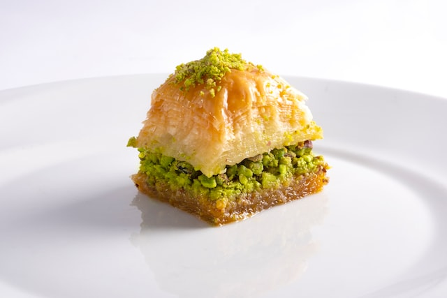

Preheat the oven to 350 degrees F (175 degrees C). Butter a 9x13-inch baking dish.
Toss together nuts and cinnamon. Unroll phyllo and cut the whole stack in half to fit the dish. Cover phyllo with a damp cloth while assembling the baklava, to keep it from drying out.
Place 2 sheets of phyllo in the bottom of the prepared dish. Brush generously with some of the melted butter. Sprinkle 2 to 3 tablespoons of the nut mixture on top. Repeat layers until all ingredients are used, ending with about 6 sheets of phyllo.
Using a sharp knife, cut baklava into 4 long rows, then diagonally 9 times to make 36 diamond shapes. Be sure to cut all the way through to the bottom of the layers.
Bake in the preheated oven until golden brown and crisp, about 50 minutes.
While baklava is baking, combine sugar and water in a small saucepan over medium heat and bring to a boil. Stir in honey, vanilla, and lemon zest; reduce heat and simmer 20 minutes.
Remove baklava from the oven and immediately spoon syrup over it. Let cool completely before serving. Store uncovered.